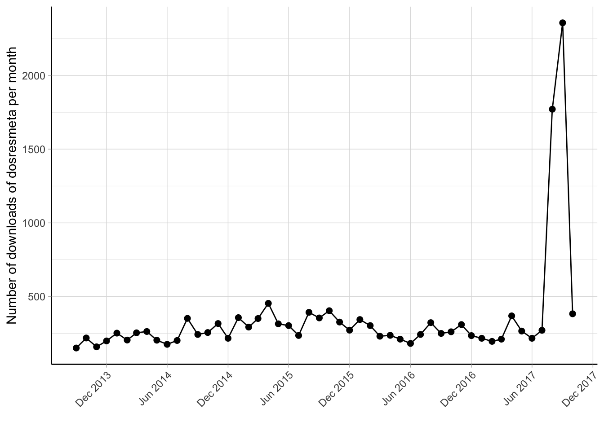
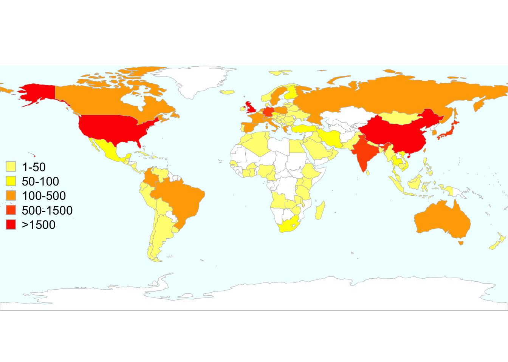
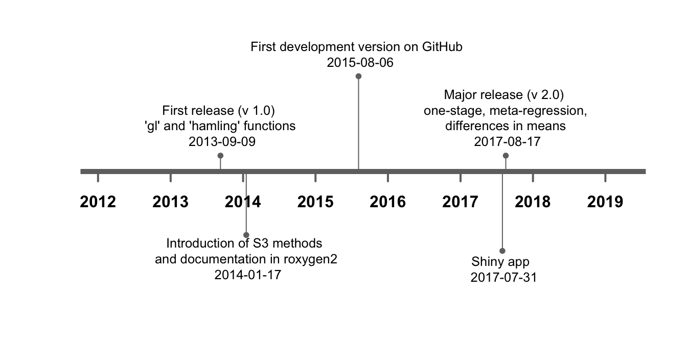
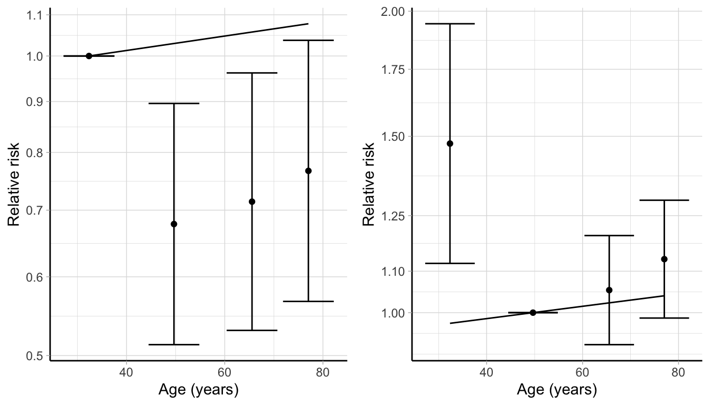
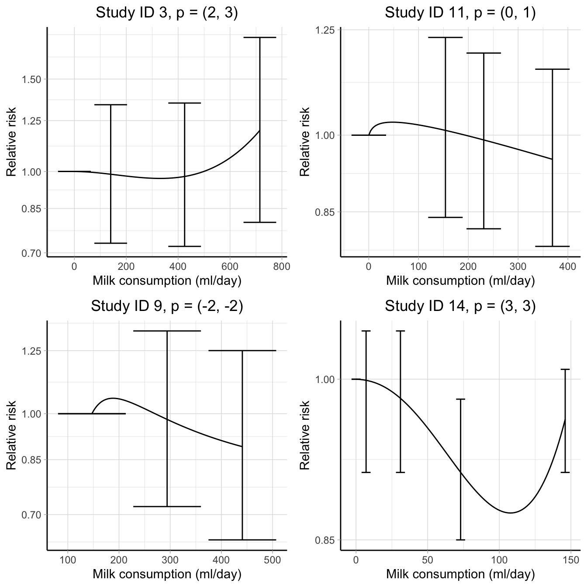

Chapter 4 Methods
4.1 The dosresmeta R package
The first version of the dosresmeta R package was released on the Comprehensive R Archive Network (CRAN) on September 2013. It is listed in the CRAN task view Meta-Analysis (https://CRAN.R-project.org/view=MetaAnalysis), a guide that covers the vast collection of R packages for facilitating meta-analysis of summary statistics.

Figure 4.1: Monthly number of downloads of the dosresmeta R package from the RStudio CRAN mirror September 2013 - December 2017.
The dosresmeta package is now available in the updated version 2.0.1 and new features are being implemented in the version under development on GitHub (https://github.com/alecri/dosresmeta). Currently, the dosresmeta package is downloaded and used worldwide, with a median number of 260 downloads/month (Figure 4.1). The countries where it has been downloaded most are Great Britain (4005), United States (3905), and China (1605) (Figure 4.2. Working examples, codes, and data are available at http://alecri.github.io/software to fully reproduce figures and numbers presented in both applied and theoretical papers.

Figure 4.2: Total number of downloads of the dosresmeta R package worldwide from the RStudio CRAN mirror September 2013 - December 2017.
The implementation of the package is presented in Paper I, which is also offered as a free guide for the package in a vignette accessible by typing browseVignettes("dosresmeta") from the R console.
4.1.1 Architecture and design of the package
The initial version 1.0 of the dosresmeta R package implemented the two-stage approach for dose–response meta-analysis described in Sections 2.3.1 and 2.3.2. The package included some facilities for efficiently estimating the dose–response associations across the included studies and used the mvmeta package for combining the study-specific regression coefficients (Gasparrini et al., 2012). The main novelty of the version 1.0 was the implementation of gl and hamling functions for reconstructing the covariance matrices among sets of log relative risks using the methods developed by Greenland & Longnecker (1992) and Hamling et al. (2008) (Figure 4.3).
In version 1.3, dedicated functions were written for summarizing and displaying results, and for predicting the pooled dose–response association as described in Section 2.3.2. Compared to other routines, the predict function offers the possibility of deriving the predicted curve also for dose levels that are not observed in the analyzed data. The same applies for the choice of the reference dose value. The main advantage is that publication quality curves and tables (i.e. combined results for desired dose values) can be easily obtained with a few lines of code. Practical examples are available at https://alecri.github.io/software/dosresmeta.html.
Furthermore, the center argument was added in the main function for centering the design matrix as described by Liu et al. (2009). The argument has been set to TRUE by default for preventing possible errors when modelling non-linear curves, especially in case of non-zero exposure reference categories. Finally, additional arguments were introduced for allowing the specification of a list of covariance matrices directly by the user. This can be useful in pooling projects where the principle investigators share the results of harmonized analyses.
New capabilities and functions were written in the version under development available on GitHub and were finally included in the major release version 2.0 on CRAN. The dosresmeta package was largely redesigned in the internal functions but kept unchanged the external form and arguments for backward compatibility. Three main features were introduced: the extension of the two-stage approach for dose–response meta-analysis of differences in means (rather than log relative risks) (Crippa & Orsini, 2016), the possibility of fitting meta-regression models and the implementation of an alternative one-stage approach. The first was achieved by extending the choices of the covariance argument for results presented in terms of mean and standardized mean differences, which related to the covar.smd function. The alternative covariance = "indep" can be specified for assuming independence of the log relative risks or differences in means. This is particularly useful when the information for reconstructing the covariances is not available (see additional (useful) code section on the referenced site for examples).

Figure 4.3: Development of the dosresmeta R package over time.
The implementation of the one-stage approach and related functions is discussed in more detail in the methods for Paper V. The updated dosresmeta package also implements functions to facilitate specific aspects of a dose–response meta-analysis. These includes the assessment of goodness-of-fit discussed in Paper II, tests for fixed- and random-effects coefficients, conditional and marginal predictions, and the use of fractional polynomials.
Based on the last version of the dosresmeta package, an interactive interface is also available at http://alessiocrippa.com/shiny/dosresmeta. The web-app can be useful for introducing the concepts of dose–response meta-analysis to those researchers who are not familiar with the R software.
4.1.2 Description of the package
The dosresmeta package can be downloaded from CRAN by typing directly in R
R> install.packages("dosresmeta")The version under development is instead available from GitHub
R> install.packages("devtools")
R> devtools::install_github("alecri/dosresmeta")The package consists of a main function dosresmeta with the following arguments
R> str(dosresmeta)function (formula, id, v, type, cases, n, sd, data, mod = ~1, intercept = F,
center = T, se, lb, ub, covariance = "gl", method = "reml", proc = "2stage",
Slist, method.smd = "cohen", control = list()) The dose–response model is specified in the formula argument in a symbolic representation. For example, if logrr and dose are the variable names for the log relative risk and assigned doses, a linear trend is specified as logrr ~ dose while a quadratic curve as logrr ~ dose + I(dose^2). The variables are defined in a data.frame whose name is specified in the data argument. By default intercept = FALSE does not include the intercept term in the covariance matrix, which is constructed in terms of contrasts unless center = FALSE. The id argument specifies the name for the study id variable (can be omitted for single study analysis).
The standard errors for the log relative risks are specified in the se argument, or alternatively, either the variances (v) or the lower (lb) and upper bounds (ub) of the relative risks need to be specified. The additional information about the study-design (type), the number of cases (cases), and participants or amount of person-time (n) is used for reconstructing the covariance of the log relative risk (or mean differences) using the method specified in the covariance argument (default is the Greenland and Longnecker’s method). A list of covariance matrices can be passed to the Slist argument when covariance = "user".
A two-stage procedure with REML estimation method is the default. A one-stage procedure (proc = "1stage") and either ML estimator method = "ml" or a fixed-effect analysis method = "fixed" can be adopted. Residual heterogeneity can be modeled in a meta-regression analysis by specifying covariates in the mods argument. For example, a different curve depending on the study design can be specified with mods = ~ type. Finally, a list of parameters can be passed to the control argument to control the fitting process.
The dosresmeta function returns an object of class “dosresmeta”” with the information from the dose–response meta-analytic model. The print and summary methods display and produce a summary of the content of a dosresmeta object. Thepredict` method facilitates the presentation of the results of a dose–response meta-analysis
R> str(dosresmeta:::predict.dosresmeta)function (object, newdata, xref, expo = FALSE, xref_vec, ci.incl = TRUE,
se.incl = FALSE, xref_pos = 1, delta, order = FALSE, ci.level = 0.95,
safe_sort2stage = TRUE, ...) where object contains the results of the dosresmeta function. A new data.frame with the desired doses can be passed to the newdata argument for obtaining the corresponding predicted log relative risks. If not provided, the predictions will be calculated for the assigned dose values available from the studies. The expo argument can be set to TRUE to predict log relative risk and confidence intervals (unless ci.incl = FALSE) on the exponential scale. The reference value can be specified with the xref argument, or better, specifying the line of the newdata which serves as referent (xref_pos argument). For non-linear models, a vector needs to be provided in xref_vec instead of xref. The delta argument is useful for predicting the linear increase in the outcome for a delta increase in the exposure, and is thus only appropriate in a linear trend analysis. In the updated version of the dosresmeta package, a blup method has also been implemented for predicting the study-specific random-effects and hence the conditional curves.
Additional functions can be listed
R> ls("package:dosresmeta") [1] "covar.logrr" "covar.smd" "dosresmeta" "dosresmeta.control"
[5] "dosresmeta.fit" "fpgrid" "fracpol" "gof"
[9] "grl" "hamling" "vpc" "waldtest" Use ls(getNamespace("dosresmeta"), all.names=TRUE) for a complete list including hidden auxiliary functions.
4.1.3 Datasets
Several datasets from published dose–response meta-analyses and methodological articles have been included in the dosresmeta package. To get a list as in Table 1 with the names and description type
R> data(package = "dosresmeta")| Name | Description |
|---|---|
| alcohol_crc | Eight published studies on the relation between alcohol intake and colorectal cancer (Orsini, Li, et al., 2011) |
| alcohol_cvd | Six published studies on the relation between alcohol intake and cardiovascular disease risk (Liu et al., 2009) |
| alcohol_esoph | Fourteen case-control studies on the relation between alcohol consumption and esophageal cancer (Rota et al., 2010) |
| alcohol_lc | Four published studies on the relation between alcohol intake and lung cancer (Orsini, Li, et al., 2011) |
| ari | Five clinical trials on the relation between aripiprazole and schizophrenia (Crippa & Orsini, 2016) |
| bmi_rc | Four case-control studies on the relation between Body Mass Index and renal cell cancer (Liu et al., 2009) |
| cc_ex | Case-control data on alcohol and breast cancer risk (Greenland & Longnecker, 1992) |
| ci_ex | Cumulative incidence data on high-fat dairy food and colorectal cancer risk (Orsini et al., 2006) |
| coffee_cancer | Eight prospective studies on the relation between coffee consumption and cancer mortality (Crippa, Discacciati, Larsson, Wolk, & Orsini, 2014) |
| coffee_cvd | Thirteen prospective studies on the relation between coffee consumption and cardiovascular mortality (Crippa et al., 2014) |
| coffee_mort | Twenty-one prospective studies on the relation between coffee consumption and all-cause mortality (Crippa et al., 2014) |
| coffee_mort_add | Additional two prospective studies on the relation between coffee consumption and all-cause mortality (Nilsson et al., 2012) |
| coffee_stroke | Eleven prospective studies on the relation between coffee consumption and stroke risk (Larsson & Orsini, 2011) |
| fish_ra | Six studies on the relation between fish consumption and rheumatoid arthritis risk (Di Giuseppe, Crippa, Orsini, & Wolk, 2014) |
| ir_ex | Incidence-rate data on fiber intake and coronary heart disease risk (Orsini et al., 2006) |
| milk_mort | Eleven prospective studies on the relation between milk consumption and all-cause mortality (Larsson, Crippa, Orsini, Wolk, & Michaëlsson, 2015) |
| milk_ov | Nine studies on the relation between milk consumption and ovarian cancer (Larsson, Orsini, & Wolk, 2006) |
| oc_breast | Twenty-two case-control studies on the relation between oral contraceptives use and breast cancer (Berlin et al., 1993) |
| process_bc | Ten studies on the relation between processed meat and bladder cancer (Crippa, Larsson, Discacciati, Wolk, & Orsini, 2016) |
| red_bc | Twelve studies on the relation between red meat and bladder cancer (Crippa, Larsson, et al., 2016) |
| sim_os | Simulated data for one-stage dose-response meta-analysis (Crippa, Discacciati, Bottai, Spiegelman, & Orsini, 2018) |
4.2 Goodness-of-fit
The aim of Paper II was to address how to evaluate the goodness-of-fit in dose–response meta-analysis. The distance between observed and predicted data is often at the heart of model checking. Although we are working with linear regression models, features of aggregated dose–response data can complicate this comparison. The predicted curve is presented using a referent, \(x_\mathrm{ref}\), which may differ from the study-specific reference values. Thus the predicted and observed log relative risks can no longer be directly compared because their baseline group is not the same. Even in the case where the reference values are all the same and equal to \(x_\mathrm{ref}\), the covariance among the study-specific RRs and the heterogeneity across the studies adds further difficulties in evaluating if the chosen model provides a good summary of the observed data. The proposed tools for assessing the goodness-of-fit are presented in a fixed-effect analysis where meta-regression models as in (2.20) are typically employed to explain the observed heterogeneity. We consider relevant measures, tests, and graphical tools that take into account the correlation of the observed data.
4.2.1 Deviance
The first natural measure of goodness-of-fit is a comparison between the predicted and observed data points, i.e. the non-referent log relative risks. This can be done by analyzing the residual term errors, which are defined by the difference between the observed log RRs, \(\mathbf{y}_i\), and the marginal prediction \[\begin{equation} \boldsymbol{\hat e_i} = \mathbf{y}_i - \mathbf{X}_i \widetilde{\mathbf{X}}_i \boldsymbol{\hat \beta} \tag{4.1} \end{equation}\]A summary for the error terms is the deviance \[\begin{equation} D = \sum_{i=1}^I \left(\mathbf{y}_i - \mathbf{X}_i \widetilde{\mathbf{X}}_i \boldsymbol{\hat \beta} \right)^\top \mathbf{S}_i^{-1} \left(\mathbf{y}_i -\mathbf{X}_i \widetilde{\mathbf{X}}_i \boldsymbol{\hat \beta} \right) = \sum_{i=1}^I \boldsymbol{\hat e_i}^\top \mathbf{S}_i^{-1} \boldsymbol{\hat e_i} \tag{4.2} \end{equation}\]
The deviance \(D\) measures the total squared deviation between observed and predicted data taking into account the covariance matrices \(\mathbf{S}_i\) of the error terms. It is usually referred to as generalized residual sum of squares (GRSS) (Draper & Smith, 2014). Decreasing values of \(D\) indicate a better agreement between reported and fitted log RRs, with 0 being the lower bound that corresponds to perfect agreement (saturated model).
The \(D\) statistic can be used as a test for model specification. Under the null hypothesis that the model is correctly specified, \(D\) follows a \(\chi^2\) distribution with df = \(\sum_{i=1}^I J_i - pm\). This is equivalent to test if the residual variance, corrected for the correlation of the error terms, is larger than expected assuming that the dose–response model is correct. A small \(p\) value can be interpreted as evidence that the fitted model fails in accounting the observed variation in the log relative risks. As for the \(Q\) test, the deviance has no upper bound and is thus difficult to interpret the absolute value of \(D\).
4.2.2 Coefficient of determination
To complement the \(D\) statistic (and the corresponding test), the coefficient of determination, \(R^2\), can be used as a descriptive measure of goodness-of-fit Kvålseth (1985). The \(R^2\) is the complement to the unit of the ratio between the \(\textrm{GRSS}\) and the generalized sum of squares, \(\textrm{GTSS} = \sum_{i=1}^I\mathbf{y}_i^\top \mathbf{S}_i^{-1} \mathbf{y}_i\). Because dose–response models do not have the intercept term, the \(R^2\) can be defined as in Theil (1958) \[\begin{equation} R^2 = 1 - \frac{\textrm{GRSS}}{\textrm{GTSS}} = 1 - \frac{\sum_{i=1}^I \left(\mathbf{y}_i - \mathbf{X}_i \widetilde{\mathbf{X}}_i \boldsymbol{\hat \beta} \right)^\top \mathbf{S}_i^{-1} \left(\mathbf{y}_i - \mathbf{X}_i \widetilde{\mathbf{X}}_i \boldsymbol{\hat \beta} \right)}{\sum_{i=1}^I \mathbf{y}_i^\top \mathbf{S}_i^{-1} \mathbf{y}_i} \tag{4.3} \end{equation}\] \(R^2\) is a dimensionless number that is bounded between 0 and 1 and can be generally interpreted as the proportion of the generalized total sum of squares explained by the dose–response model and study-level covariates. The lower bound 0 corresponds to the case where all the \(\beta\) coefficients are equal to 0 and therefore the model is not able to explain the variability in the observed log relative risks. Contrary, the upper bound 1 indicates a perfect agreement between reported and fitted data.
By construction the \(R^2\) can not decrease as the number of regression coefficients increases. A penalized, or adjusted, version that takes into account this behavior can be defined \[\begin{equation} R^2_{\textrm{adj}} = 1 - \frac{\sum_{i=1}^I J_i}{\sum_{i=1}^I J_i-m} \left(1 - R^2 \right) \tag{4.4} \end{equation}\] Possibly, a low \(R^2\) may indicate that more flexible transformations of the exposure are needed, or that there is considerable residual variability that might be explained by study-level covariates.
4.2.3 Visual tools
The visual assessment of the goodness-of-fit may reveal specific patterns in the data that might otherwise go undetected by only looking at summary measures such as the deviance and the coefficient of variation (Kvålseth, 1985). The graphical comparison can sometimes be cumbersome because different factors may affect such analysis. The aggregated dose–response data are presented using one group as comparison. This feature has two important consequences when deducing an overall trend from the reported (log) relative risks. The first is that different parameterizations, or models, can be graphically compared only if the predicted risk for the reference category is similar. The second involves the correlation of the modelled data points, which makes it difficult to evaluate if a specific model fits the reported data.
To illustrate both problems, I consider IPD from one of the registers involved in the Surveillance, Epidemiology, and End Results (SEER) Program (https://seer.cancer.gov), and focus on the association between age at diagnosis and breast cancer mortality. Using 35, 60, 70 years as cut points, I modelled age using 5 categories in a Poisson model adjusting for potential confounders and produced aggregated dose–response results in Table 4.3, where the first category served as referent.
| Age category | Mean age | Cases | Person-years | IRR | 95% CI | log IRR | SE | |
|---|---|---|---|---|---|---|---|---|
| (Intercept) | [20,35] | 32 | 56 | 2099 | 1.0 | — | 0 | 0.00 |
| relevel(age_cat, 1)(35,60] | (35,60] | 50 | 451 | 37585 | 0.7 | (0.51, 0.90) | 0 | 0.14 |
| relevel(age_cat, 1)(60,70] | (60,70] | 66 | 220 | 20591 | 0.7 | (0.53, 0.96) | 0 | 0.15 |
| relevel(age_cat, 1)(70,97] | (70,97] | 77 | 215 | 17897 | 0.8 | (0.57, 1.04) | 0 | 0.15 |
Using the methodology presented in Section 2.3.1, I estimated a linear trend and graphically compared the predicted curve and the modelled data (left panel of Figure 4.4). While the empirical log RRs may suggest an inverse association between age and breast cancer mortality, the estimated linear trend indicates opposite conclusions (a 0.17% increase in mortality for every 5-year increase of age at diagnosis). The linear trend does not seem to properly fit the data since the fitted line doesn’t event pass through the reported log RRs. The problem is that there are few cases in the reference age category and so the log RRs are typically larger. By changing the group comparison to the second age category, this issue is partially solved (right panel of Figure 4.4). To address the further issue of the covariance, we proposed graphical tools based on the analysis of the decorrelated residuals.

Figure 4.4: Comparison between observed and fitted data, changing the comparison group from the first age category (left panel) to the second one (right panel), based on the aggregated data on the association between age and breast cancer mortality presented in Table 4.3.
The residuals can be decorrelated using the Cholesky factorization of the covariance matrices \(\mathbf{S}_i = \mathbf{C}_i\mathbf{C}_i^\top\), with \(\mathbf{C}_i\) being a lower \(J_i \times J_i\) triangular matrix. The decorrelated residuals \(\boldsymbol{\hat e_i}^*\) are then calculated as \[\begin{equation} \boldsymbol{\hat e_i}^* = \mathbf{C}_i^{-1} \left(\mathbf{y}_i - \mathbf{X}_i \widetilde{\mathbf{X}}_i \boldsymbol{\hat \beta} \right) = \mathbf{C}_i^{-1}\boldsymbol{\hat e_i} \tag{4.5} \end{equation}\] and plotted against the exposure. Such a graphical analysis is the equivalent to a residual vs. predictors/predicted outcome plot after a model estimated through ordinary least squares. Since the variables in the plot are transformed, the actual value of the decorrelated residuals is not directly interpretable. However, it is still possible to detect specific patterns for the residuals over the exposure range. In such a case, the plot can indicate lack of fit of the chosen model for select exposure values. Overlaying a locally weighted scatterplot smoothing (LOWESS) may help to visualize possible patterns, while a different shape or color for the residuals can distinguish them according to study-level covariates in case of meta-regression models.
4.3 A new measure of heterogeneity
One of the possible reasons for large values of \(D\) or similarly small values of \(R^2\) is the presence of heterogeneity in the dose–response associations. The measures of heterogeneity presented in Section 2.1.3, namely \(\hat R_I\) and \(I^2\) were derived based on the assumption of homogeneity for the error variance terms \(v_i\), which is unlikely to be met in applications. To illustrate this point, let us consider the two hypothetical distributions for the within-study error terms in Table 4.5. The distribution of \(v_i\) in the first example (Analysis A) is much more homogeneous compared to the second scenario (Analysis B). The coefficient of variation for the \(v_i\) in the second example is 20 times higher than the corresponding number in the first scenario. While it seems reasonable to assume homogeneity of the \(v_i\) for the Analysis A, in the second case this hypothesis is not appropriate. Nonetheless, both \(\hat R_I\) and \(I^2\) would summarize the two distributions with a single common number.
| Analysis | \(v_1, \dots, v_5\) | \(CV_{v_i}\) | \(s_1^2\) | \(s_2^2\) |
|---|---|---|---|---|
| A | 5, 5.2, 4.9, 5.3, 4.8 | 0 | 5.03 | 5.0 |
| B | 4, 17, 15, 2, 3.8 | 1 | 5.02 | 4.4 |
4.3.1 Definition and properties
The available measures relate the between-study heterogeneity to the overall variability, whose definition also varies across studies. A different approach consists of measuring the impact of heterogeneity in determining the variance of the combined effect in a random-effects analysis. This quantity depends on the \(\tau^2\) and on the variance of the mean \(\hat \beta\), quantities that don’t require the assumption of homogeneity for the within-study error terms.
To determine how \(\tau^2\) contributes to \(\widehat{\textrm{Var}} \left(\hat \beta \right)\), we consider the hypothetical case where all the estimates \(\hat \beta_i\) are reported with no error, i.e. \(v_i = 0 \; \forall i = 1, \dots, I\). The weights used in the meta-analytic model depends only on \(\tau^2\), and following Equation (2.3) the variance of the combined effect is \(\widehat{\textrm{Var}} \left(\hat \beta \right) = \left(\sum_{i = 1}^I \hat \tau^2 \right)^{-1} = \hat \tau^2/I\). In the more realistic case where \(v_i > 0\), the variance of \(\hat \beta\) will increase to incorporate the uncertainty in the reported estimates. The contribution of the heterogeneity is still defined by \(\hat \tau^2/I\). The new measure of heterogeneity, \(\hat R_b\), can be written as \[\begin{equation} \hat R_b = \frac{\hat \tau^2}{I \widehat{\textrm{Var}} \left(\hat \beta \right)} = \frac{\hat \tau^2}{I/\left( \sum_{i = 1}^I \frac{1}{v_i + \hat \tau^2} \right)} = \frac{1}{I}\sum_{i = 1}^I \frac{\hat \tau^2}{\hat \tau^2 + v_i} \tag{4.6} \end{equation}\]
The \(\hat R_b\) is a dimensionless number that can be expressed as a percentage, ranging from 0% (corresponding to \(\hat \tau^2 = 0\), i.e. no observed heterogeneity) to 100%, for the hypothetical case where all the effects are estimated with no error. The proposed measure is defined as a function of the estimated heterogeneity (\(\hat \tau^2\)), the number of studies (\(I\)), and the within-study error terms (\(v_i\)). It satisfies the criteria required for a measure of heterogeneity (J. Higgins & Thompson, 2002): it is a non-decreasing function of \(\hat \tau^2\), it is invariant to scale transformation of the estimates, and is not intrinsically affected by the number of studies included in the analysis. Similarly to \(\hat R_I\) and \(I^2\), the proposed measure is a function on the within-error terms \(v_i\) and so it tends to 1 in case of meta-analysis of very precise estimates, even for relative small values of \(\hat \tau^2\). As already mentioned in Section 2.1.3, the use of the between-studies coefficient of variation can complement these measures (Takkouche et al., 1999). The right hand of Equation (4.6) expresses \(\hat R_b\) as an average of the ratios of the \(\hat \tau^2\) to the study-specific overall variance \(v_i + \hat \tau^2\). It is easy to derive that \(\hat R_b\) coincides with the definition of \(\hat R_I\) and \(I^2\) in case of homogeneity of the \(v_i\). When the within-errors vary across study, the difference between \(\hat R_b\) and \(I^2\) will depend on the actual values of \(v_i\), while it can be proven that \(\hat R_b \le \hat R_I\).
An estimate of the between-study heterogeneity is required for the computation of \(\hat R_b\) as well for the alternative measures \(\hat R_I\) and \(I^2\). The moment-based estimator presented in Equation (2.5) is a standard choice in many applied meta-analyses and it has the advantage of having a closed formulation. In addition, the estimator is consistent (Jackson, White, & Thompson, 2010). Using this estimation method, \(\hat R_b\) can be expressed as a function of the \(Q\) statistic \[\begin{equation} \hat R_b = \frac{1}{I} \sum_{i = 1}^I \frac{Q - (I-1)}{Q + a_i - (I - 1)} \tag{4.7} \end{equation}\] with \(a_i = v_i \left(\sum_{i = 1}^I w_i - \sum_{i = 1}^Iw_i^2/\sum_{i = 1}^I w_i \right)\). The asymptotic variance for \(\hat R_b\) can be derived by using the delta method on the relation @ref{eq:RbQ} \[\begin{equation} \widehat{\textrm{Var}} \left(\hat R_b \right) \approx \left( \frac{1}{I} \sum_{i = 1}^I \frac{a_i}{(Q + a_i - (I-1))^2} \right)^2 \textrm{Var}(Q) \tag{4.8} \end{equation}\] The formula for \(\textrm{Var}(Q) = 2(I-1) + 4\left(S_1 - \frac{S_2}{S_1}\right)\tau^2 + 2\left(S_2 - 2\frac{S_3}{S_1} + \frac{S_2^2}{S_1^2} \right)\), with \(S_r = \sum_{i = 1}^I w_i^r\), was first presented by Biggerstaff & Tweedie (1997).
When the number of studies is large, \(\hat R_b\) is asymptotically normally distributed and thus Wald-type confidence interval can be constructed \(\hat R_b \mp z_{1-\alpha/2} \sqrt{ \widehat{\textrm{Var}} \left(\hat R_b \right)}\).
4.4 A point-wise approach
Measures of heterogeneity are frequently employed in applied works. In a dose–response meta-analysis, however, there are two aspects of heterogeneity that can not be captured using standard methods. More specifically, in a two-stage analysis the same functional transformations \(g_1, \dots, g_p\) need to be defined for all the studies so that the regression coefficients can be properly combined by meta-analysis. This may have important consequences in case the chosen dose–response model adequately fits only a subset of the analyzed studies. To illustrate this aspect, I considered a subset of 4 studies on the association between milk consumption (ml/day) and all-cause mortality (Larsson et al., 2015). I modelled the individual curves using FP2 and selected in each study the combination of power terms which maximized the log likelihood (or equivalently with the minimum AIC). The chosen power terms in the individual analyses differ although the predicted curves describe a similar association (Figure 4.5). Forcing a unique set of power terms may decrease the fit of some of the study-specific analyses and thus produce more unstable estimates for the dose–response parameters.
Another difficulty may be encountered in uniformly defining the \(g\) transformations across the studies. For instance, we might decide to model the previous association between milk consumption and mortality using RCS. A percentile approach is commonly adopted for choosing where to place the \(\mathbf{k}\) in Equation (2.31) (Harrell, 2013). The first and third knots are located at fixed percentiles, generally at the 10-th and 90-th percentiles of the exposure distribution, while the median exposure value is chosen for the remaining knot. If the exposure distributions largely vary (especially in terms of range definition), as it is in this case, it may not be possible to equally locate the knots in all the studies. Indeed, in our example only one study considered dose levels higher than the upper knot (433 ml/day). As a consequence, the second spline transformation for the other studies will be equal 0 and the model is not estimable (the design matrix is not invertible).
A related problem directly affects the prediction of the pooled log relative risks. The maximum dose levels varies largely across studies, with values 715, 441, 369, 146 ml/day. The predictions from the second stage analysis, however, are obtained using the combined \(\boldsymbol{\hat \beta}\), which disregards the information about the exposure. All the studies contribute in predicting the log relative risks, even if some of them only reported results for low exposure values. In such a way, the combined curve may be severely affected by these extrapolations.

Figure 4.5: Dose–response associations between milk consumption (ml/day) and all-cause mortality in 4 studies. The curves are modelled using fractional polynomials with the sets of power terms \(p\) (reported in the title) chosen by maximizing the study-specific likelihoods. The results are presented on the log scale using the observed reference values as comparators.
A point-wise approach for meta-analysis of aggregated dose–response data may properly address the described issues. A point-wise approach was first presented by Sauerbrei & Royston (2011) for meta-analysis of continuous covariates based on IPD. The strategy consists of separately estimating the study-specific curves and, based on them, calculating the predicted log relative risks for selected exposure values. The combined curve is obtained by averaging the predicted relative risks instead of calculating them from the combined regression coefficients. The described methodology has the advantage of fitting potential diverse curves across the studies, and limiting the study-specific predicted log relative risks to the observed exposure range.
4.4.1 Estimation and prediction of study-specific curves
The first step of a point-wise approach is similar to the methodology presented in Section 2.3.1 with the difference that the \(g\) transformations in the design matrices @ref(eq:des.matrix) are subscripted by the study index \(i\), to highlight that they may differ across the studies, also in terms of number (\(p_i\)) \[\begin{equation} \mathbf{X}_i=\left[ \begin{array}{ccc} g_{i1}(x_{i1}) - g_{i1}(x_{i0}) & \dots & g_{ip_i}(x_{ip}) - g_{ip_i}(x_{i0}) \\ \vdots & & \vdots \\ g_{i1}(x_{iJ_i}) - g_{i1}(x_{i0}) & \dots & g_{ip_i}(x_{iJ_i}) - g_{ip_i}(x_{i0}) \\ \end{array} \right] \end{equation}\] For example, different power terms for FP2 can be chosen or, for a RCS analysis, the knots can be located separately in each study. Potentially, a mixture of curves could be also estimated across the study in order to improve the fit of the individual dose–response analyses. The regression coefficients are then estimated using GLS estimators presented in Equation (2.16).
Once the curves have been estimated, the results of the first step analysis are presented in terms of predicted log relative risks for a set of \(n_i\) exposure values \(\mathbf{x}_{n_i}\) using a suitable common value \(x_\mathrm{ref}\) as comparator. The index \(i\) is used to highlight that the chosen dose values may differ across the studies. In particular, the predictions in each study can be limited to the observed exposure range: \(\max \left( \mathbf{x}_{n_i} \right) \le \max \left( \mathbf{x_i} \right)\). \[\begin{align} \hat {\boldsymbol y}_i &= \mathbf{X}_{n_i} \boldsymbol{\hat \beta_i} \tag{4.9} \\ \hat{\boldsymbol{v}}_i &= \mathrm{diag}\left( \mathbf{X}_{n_i} \widehat{\textrm{Var}} \left( \boldsymbol{\hat \beta_i} \right) \mathbf{X}_{n_i}^\top \right) \tag{4.10} \end{align}\] with formulas similar to those presented in Equation (2.24) and (2.25), with the notable difference that the predictions are based on the study-specific \(\boldsymbol{\hat \beta_i}\) rather than the mean \(\boldsymbol{\hat \beta}\) coefficients.
4.4.2 Averaging of dose–response predictions
In a point-wise strategy, the combined dose–response curve is derived by pooling the study-specific predicted log RRs derived in Equation (4.9). The second step consists of \(n = \max(n_i)\) univariate meta-analyses where the effect sizes are the elements in \(\hat {\boldsymbol y}_i\) with the within-error variances \(\hat{\boldsymbol{v}}_i\). The combined predicted (log) relative risks are estimated using the weighted average presented in Equation (2.2).
As a final result, the combined dose–response curve is graphically presented as a smooth function of the combined predicted relative risks for the chosen \(n\) dose levels. In addition, all the results of the univariate meta-analyses can be pointwisely presented, such as estimates of the heterogeneity \(\tau^2\) and related measures (\(\hat R_b\), \(I^2\), and \(\hat R_i\)), the \(Q\) statistic, and the study-specific weights, with the potential of a much richer set of results.
4.5 A one-stage model
The study-specific dose–response analyses in a standard two-stage or alternative point-wise approach suffer from the limited number of data points. Most of the individual studies present results for 2 to 4 non-referent exposure categories, but cases where dichotomization of the exposure occurred are not rare (Turner et al., 2010). In the latter case, only dose–response models parameterized by \(p = 1\) coefficient can be estimated (e.g. linear trend). Indeed, a standard requirement for meta-analysis of non-linear curves is that the studies provide at least two non-referent relative risks.
The extension of the one-stage approach to a random-effects meta-analysis may overcome the exclusions of studies with limited number of individual data points. A one-stage approach is conceptually easier since the entire analysis can be formulated in a single statistical model. Flexible curves characterized by multiple parameters (\(p > 3\)) can also be easily accommodated, so that more elaborate research questions can be answered, without losing the information from those studies usually excluded in a two-stage analysis.
4.5.1 Model definition
A one-stage dose–response meta-analysis can be written in the form of a linear mixed-effects model \[\begin{equation} \mathbf{y}_{i} = \mathbf{X}_{i} \boldsymbol{\beta} + \mathbf{Z}_{i} \mathbf{b}_i + \boldsymbol{\varepsilon}_{i} \tag{4.11} \end{equation}\] where the terms \(\mathbf{y}_{i}\), \(\mathbf{X}_{i}\), and \(\boldsymbol{\varepsilon}_{i}\) are defined exactly as those presented in the first step of a two-stage analysis (Equation (2.13)). The quantities \(\boldsymbol{\beta}\) and \(\mathbf{b}_i\), instead, are the population average parameter and unobserved random-effects as defined in the second step (Equation (2.18)). The additional \(\mathbf{Z}_{i}\) is the \(n_i \times p\) design matrix for the random-effects and coincides with \(\mathbf{X}_{i}\). Assuming a multivariate distribution for the random-effects terms, the marginal model for a one-stage analysis is \[\begin{equation} \mathbf{y}_{i} \sim \mathcal{N} \left( \mathbf{X}_{i} \boldsymbol{\beta}, \mathbf{Z}_{i} \boldsymbol{\Psi} \mathbf{Z}_{i}^\top + \mathbf{S}_i \right) \tag{4.12} \end{equation}\] Similarly, the conditional model is defined as \[\begin{equation} \mathbf{y}_{i} \mid \boldsymbol{b}_i \sim \mathcal{N} \left( \mathbf{X}_{i} \boldsymbol{\beta} + \mathbf{Z}_{i} \boldsymbol{b}_i, \mathbf{S}_i \right) \tag{4.13} \end{equation}\]
Note that the conditional and marginal models are now defined for the log relative risks rather than the dose–response coefficients. In particular, the definition of the marginal variance \(\boldsymbol{\Sigma}_i = \mathbf{Z}_{i} \boldsymbol{\Psi} \mathbf{Z}_{i}^\top + \mathbf{S}_i\) is quite different. It depends not only on the within and between components but also on the corresponding dose value \(x_{ij}\) (or equivalently \(z_{ij}\)) associated with \(y_{ij}\).
Meta-regression models can be estimated by including in \(\mathbf{X}_{i}\) the interaction terms between the \(p\) transformations of the exposure variable and study-level covariates, while leaving unchanged the definition of the \(\mathbf{Z}_{i}\) matrix for the random-effects. Assuming a quadratic curve and a binary study-level covariate \(u_i\), for example, the design matrices for the fixed- and random-effects can be written as \[\begin{equation*} \mathbf{X}_i = \begin{bmatrix} x_{i1} - x_{i0} & x_{i1}^2 - x_{i0}^2 & \left(x_{i1} - x_{i0}\right) u_i & \left( x_{i1}^2 - x_{i0}^2\right) u_i \\ \vdots & \vdots & \vdots & \vdots \\ x_{iJ_i} - x_{i0} & x_{iJ_i}^2 - x_{i0}^2 & \left(x_{iJ_i} - x_{i0}\right) u_i & \left(x_{iJ_i}^2 - x_{i0}^2\right) u_i \\ \end{bmatrix} \end{equation*}\]
\[\begin{equation*} \mathbf{Z}_i = \begin{bmatrix} x_{i1} - x_{i0} & x_{i1}^2 - x_{i0}^2 \\ \vdots & \vdots \\ x_{iJ_i} - x_{i0} & x_{iJ_i}^2 - x_{i0}^2 \\ \end{bmatrix} \end{equation*}\]
4.5.2 Estimation, hypothesis testing, and model comparison
The parameters to be estimated are the \(m\times p\) fixed effects and the \(p \times (p+1)/2\) elements of the between-study variance matrix. We consider likelihood-based estimators that maximize either the log-likelihood of model (4.13) \[\begin{equation} \begin{split} \ell \left( \boldsymbol{\beta}, \boldsymbol{\xi} \right) = & -\frac{1}{2} n \log(2\pi) -\frac{1}{2} \sum_{i=1}^I \log | \boldsymbol{\Sigma}_i \left( \boldsymbol{\xi} \right) | + \\ & -\frac{1}{2}\sum_{i=1}^I \left[ \left( \mathbf{y}_i - \mathbf{X}_i \boldsymbol{\beta} \right)^\top \left( \boldsymbol{\Sigma}_i \left( \boldsymbol{\xi} \right) \right)^{-1} \left( \mathbf{y}_i - \mathbf{X}_i \boldsymbol{\beta} \right) \right] \end{split} \tag{4.14} \end{equation}\] or the corresponding restricted version \[\begin{equation} \begin{split} \ell_R \left( \boldsymbol{\xi} \right) = & -\frac{1}{2} (n - p) \log(2\pi) - \frac{1}{2} \sum_{i=1}^I \log | \boldsymbol{\Sigma}_i \left( \boldsymbol{\xi} \right) | - \frac{1}{2} \log \left| \sum_{i=1}^I \mathbf{X}_i^\top \left( \boldsymbol{\Sigma}_i \left( \boldsymbol{\xi} \right) \right)^{-1} \mathbf{X}_i \right| + \\ &-\frac{1}{2}\sum_{i=1}^I \left[ \left( \mathbf{y}_i - \mathbf{X}_i \boldsymbol{\hat \beta} \right)^\top \left( \boldsymbol{\Sigma}_i \left( \boldsymbol{\xi} \right) \right)^{-1} \left( \mathbf{y}_i - \mathbf{X}_i \boldsymbol{\hat \beta} \right) \right] \end{split} \tag{4.15} \end{equation}\] As in case of multivariate meta-analysis, likelihood estimators requires iterative algorithms to optimize the functions (4.14) and (4.15). In particular, the Nelder-Mead method can be employed to find the maximum for the parameters in the multidimensional domain. For ease of computation, both likelihoods are expressed as function of only the \(\boldsymbol{\xi}\) parameters, which corresponds to the elements of the lower triangular Cholesky decomposition of \(\boldsymbol{\Psi}\). The algorithms start with an initial guess for \(\boldsymbol{\Psi}\), obtain an estimate for \(\boldsymbol{\beta}\) using GLS estimators and maximize the objective function in terms of \(\boldsymbol{\xi}\). The steps are iterated until convergence is achieved.
Test of hypothesis and confidence intervals are based on the established theory for mixed models. Inference on the fixed-effects coefficients is conducted in a similar way as presented in Section 2.3.2, using the asymptotic normal distribution for the estimator of \(\boldsymbol{\beta}\). Tests for the variance components, instead, generally require a mixture of \(\chi^2\) because the coefficients to be tested can only be positive. When \(p \ge 2\), however, the distribution of the test statistic is difficult to implement, so that alternative measures can be instead applied.
Following the idea behind the definition of the ICC, the marginal variance in (4.12) can also be decomposed in the within-study and between-study components. The dose–response model (4.11) is a mixed model with random-effects for the slope terms and with no intercept. Thus, the between-study variance is a quadratic function of the assigned dose values. For this setting Goldstein, Browne, & Rasbash (2002) defined the Variance Partition Coefficient (VPC) as the ratio of the between-studies component by the total residual variability \[\begin{equation} \textrm{VPC}_{ij} = \frac{\mathbf{z}_{ij} \boldsymbol{\Psi} \mathbf{z}_{ij}^\top}{\mathbf{z}_{ij} \boldsymbol{\Psi} \mathbf{z}_{ij}^\top + s_{ij}^2} \tag{4.16} \end{equation}\] The VPC is indexed by both \(i\) and \(j\) because it depends both on the observed dose value \(z_{ij}\) and the variance for the log relative risk \(s_{ij}^2\). Values for VPC can be expressed as percentage to quantify the proportion of residual variance attributable to heterogeneity. Because the VPC will typically vary for different doses, overlaying a LOWESS smother in a scatter plot VPC versus dose levels may help to examine the impact of heterogeneity over the exposure range.
Information criteria based on the log-likelihood (4.14) can be used to compared the fit of alternative models. As opposed to the corresponding measure from a two-stage analysis, the AIC from a one-stage model is not limited to the comparison of meta-regression models assuming the same functional relationship. Instead, the fit of different dose–response analyses can be properly compared using these fit indices since the log-likelihood is conditional on the modelled log relative risks rather than the study-specific regression coefficients.
4.5.3 Prediction
Predictions for the combined, or marginal, curve are obtained as in Equation (2.24), where now the \(\boldsymbol{\hat \beta}\) coefficients were estimated using the log relative risks as outcome variables rather than the study-specific \(\boldsymbol{\hat \beta}_i\).
Predictions are also available for study-specific curves. Using the normality distribution for the random-effects, Henderson, Kempthorne, Searle, & Von Krosigk (1959) computed the asymptotic BLUP of the random-effects \(\boldsymbol{b}\) as \[\begin{equation} \hat {\mathbf{b}}_i = \hat{\boldsymbol{\Psi}} \mathbf{Z}_i^\top \hat{\boldsymbol{\Sigma}}_i^{-1}\left( \mathbf{y}_i - \mathbf{X}_i\hat{\boldsymbol{\beta}} \right) \tag{4.17} \end{equation}\]
The conditional dose–response coefficients are defined as \(\mathbf{X}_i\hat{\boldsymbol{\beta}} + \hat {\mathbf{b}}_i\). Of note, individual curves defined by \(p\) parameters can be predicted for those studies reporting \(J_i < p\) non-referent relative risks. The BLUP employ the information of the entire distribution of the random-effects to make the best possible prediction.
4.5.4 Comparison with two-stage analysis
Previous methodological articles have oftentimes implemented new methods using the two-stage approach, mainly because of computation reasons. The alternative one-stage approach has been frequently referred to as equivalent and was not further investigated. The tools to assess the goodness-of-fit in Paper II were established using the one-stage framework. We proved in the supplementary material of the original paper that the two techniques give identical results in a fixed-effects analysis of non-linear curves, not only for the simpler case of a linear trend. In the appendix of Paper V, we extended the equivalence to the setting of non-linear curves for a random-effects model. In order to provide the same point and interval estimates, the study-specific models in the two-stage analysis need to be estimable, i.e. \(p \le \min(J_i)\). In practical examples, small discrepancies in \(\boldsymbol{\hat \beta}\) and \(\widehat{\textrm{Var}} \left( \boldsymbol{\hat \beta} \right)\) may be related to differences in the optimization methods for the objective functions of the two techniques.